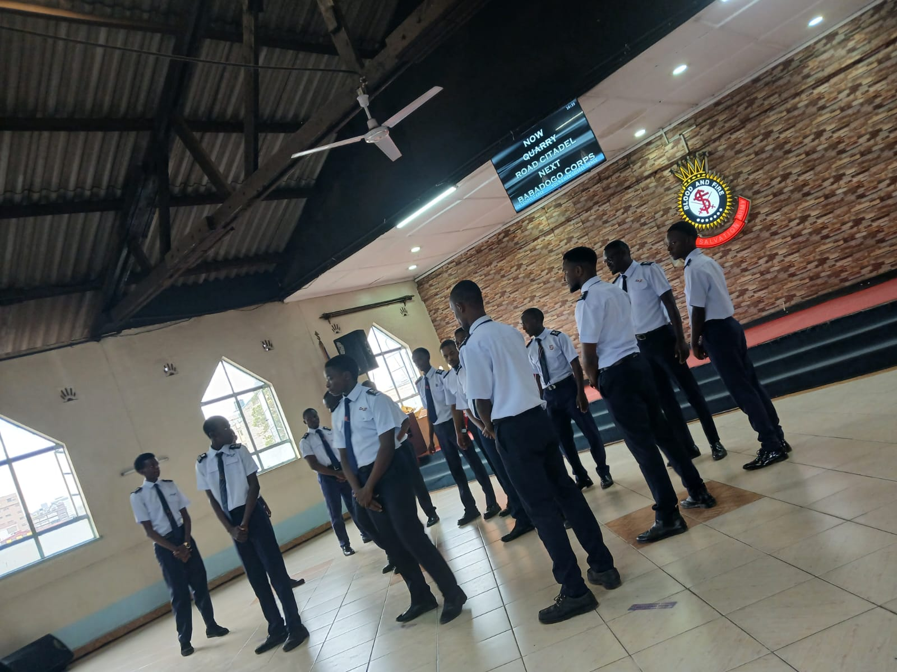

Sunday Service
March 9, 2026
Sunday Worship Experience
A morning of unhurried praise that carried our congregation from declaration into deep, quiet surrender.
Read More →Quarry Road Band ministers through praise, worship, music excellence, and spiritual impact — leading hearts into the presence of God.
Quarry Road Band is a dedicated church worship ministry committed to creating meaningful worship experiences that connect people with God. Through praise, worship, live performances, conferences, church services, and special events, the band seeks to inspire faith, unity, and spiritual growth.
Every song we play and every note we strike is laid like a stone toward one purpose: pointing hearts to Christ. Whether on a Sunday morning or under the lights of a citywide conference, our mission stays the same — to lead people into His presence.
A look back at the services, revivals, and gatherings where we've had the privilege of leading worship.

Sunday ServiceA morning of unhurried praise that carried our congregation from declaration into deep, quiet surrender.
Read More → Youth Ministry
Youth Ministry
High-energy worship sets that gave the next generation space to encounter God in their own voice.
Read More → Concert
Concert
A full evening concert blending original songs and beloved hymns for a citywide audience.
Read More → Celebration
Celebration
Marking a milestone year with a worship set that honored the past and welcomed what's next.
Read More → Conference
Conference
Three days of sustained, intercessory worship for leaders gathered from across the region.
Read More →Taking worship beyond the walls of the church to bless and serve our local neighborhood.
Read More →A visual look into the moments — on stage, in prayer, and out in the community — that shape who we are.


Wherever your congregation gathers, we're ready to bring excellence, presence, and a heart for worship.
Leading congregational worship for weekly services.
Multi-day worship support for conferences and summits.
Dynamic worship sets tailored for youth gatherings.
Full-length concerts of original and classic worship music.
Sustained, atmospheric worship for prayer gatherings.
Worship that prepares hearts for a move of God.
Anniversaries, dedications, and milestone celebrations.
Bringing worship into outreach and missions programs.
Sacred music ministry for Christian wedding ceremonies.
Training sessions for church musicians and vocal teams.
Featured performances, event highlights, and ministry recaps from recent gatherings.
Get updates on upcoming events, new releases, and ministry news.
From Sunday mornings to citywide conferences, we'd be honored to serve alongside your ministry team and lead your congregation into God's presence.
Fill out the form below and our ministry coordinator will respond within 48 hours.